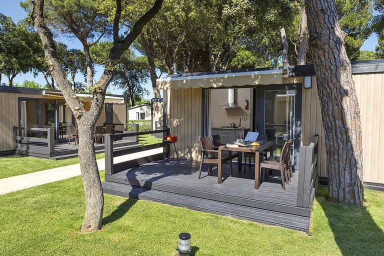

Servei · Platja d'Aro
Al cor de la Costa Brava, a prop de la platja gran de Platja d’Aro. Al costat de la Via Verda de la Ruta de Carrilet i del Parc dels Estanys. Terreny pla i arbrat. Disposa de 4 piscines…